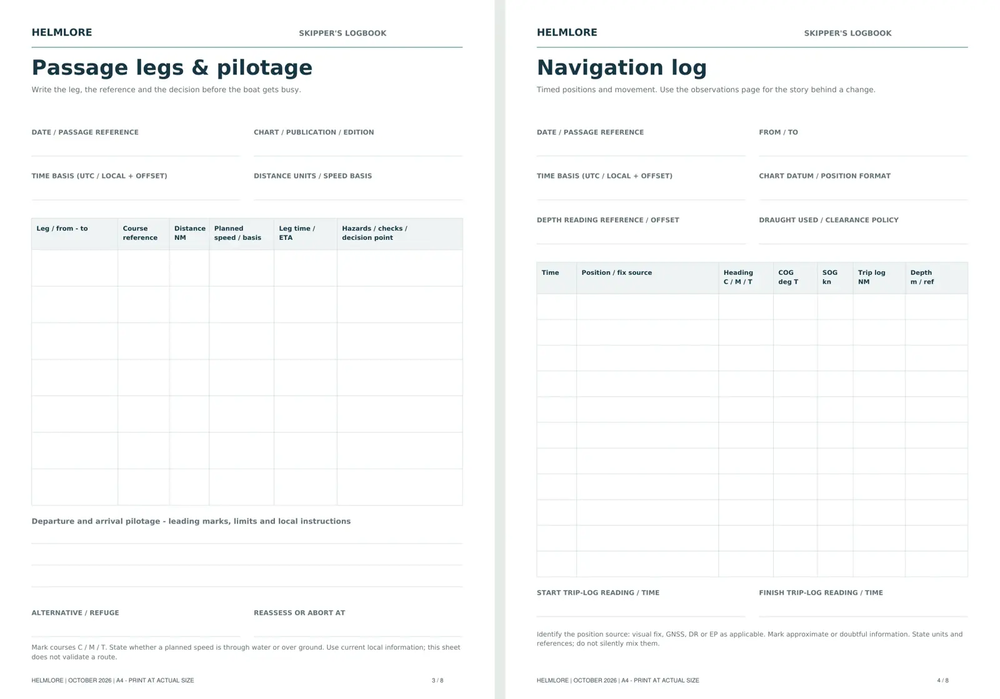

Coastal passage planning:
a UK template and worked example
A passage plan connects your boat, crew and the conditions with a route you can monitor. Cover the whole journey, identify what could change, and decide where you can safely choose another option. Use the printable template below to organise your own plan.
The MCA’s pleasure-vessel guidance explains the passage-planning responsibilities associated with SOLAS V. The detail should suit the vessel and journey; a short trip still needs preparation. This guide is a learning framework, not a completed route or a substitute for current operational information.
1. Start with the boat and crew
Record the vessel’s draught, usable fuel, realistic endurance and equipment limitations. Consider the crew’s experience, fatigue and ability to help. The destination needs to fit those limits.
Agree what would make you postpone or shorten the trip. Write the decision down while you are alongside, when it is easier to change your mind.
2. Gather current weather and navigation information
Use suitable current charts, updates, pilotage information and local harbour directions. Check restrictions, obstructions and access arrangements for both the intended destination and alternatives.
Review marine forecasts for the route and return, noting their issue times. Compare expected conditions with what is happening locally, and plan how to obtain updates. A sheltered departure does not describe an exposed headland later in the trip.
3. Separate tidal height from tidal stream
Height helps assess water depth and clearance. Stream affects movement over the ground, timing and sea conditions. Check both rather than treating a high-water time as an answer to every tidal question.
Confirm the prediction’s date, location, units, datum and time basis. A UTC/BST mistake can undermine an otherwise careful plan. Use compatible depth references, your vessel’s draught and a suitable clearance margin; include uncertainty and local conditions in the decision.
Read Tides, Heights & Streams if these distinctions need a refresher.
4. Build a berth-to-berth route
Plan the departure, open-water legs and arrival approach. Identify hazards, suitable offing, relevant traffic constraints and pilotage cues. Record the information needed for the next decision without burying it in unnecessary detail.
Mark the reference for any course or bearing: true, magnetic or compass. A planned ground track is not automatically the heading to steer when tidal stream or leeway acts on the boat.
5. Estimate time and fuel from realistic assumptions
For a leg with a reasonably steady estimated speed over ground (SOG), time in hours equals distance in nautical miles divided by SOG in knots. If stream or speed changes, split the estimate into suitable sections. Do not substitute boat speed through the water without accounting for the resulting ground movement.
Base fuel planning on your boat’s usable supply and credible consumption information. Include manoeuvring, expected conditions, relevant auxiliary use and a suitable reserve. There is no single fuel-burn figure or reserve percentage that makes every vessel and passage safe.
6. Choose alternatives before you need them
Check that an alternative can actually be entered and used in the expected conditions. Note the last useful decision point before a tidal gate, exposed stretch or restricted entrance.
Make the trigger explicit: a missed window, declining visibility, a fault, crew illness or conditions beyond your limits. “We will see when we get there” leaves the decision until your options may be smaller.
Coastal passage planning template
Print a blank copy and complete it from current information for your vessel, area and crew. Add separate leg and pilotage sheets where needed.
| Planning item | Your notes |
|---|---|
| Vessel and trip | Boat, date, skipper, crew, departure, destination and alternative. |
| Information and time basis | Charts/publications and updates; forecast source and issue time; tide source, date, port and UTC/local time basis. |
| Boat and crew limits | Draught and clearance policy; capability, endurance, equipment limitations and stop/go limits. |
| Weather, heights and streams | Expected conditions along the route; depth/access windows; stream timing, direction and rate. |
| Route and pilotage | Berth-to-berth legs, charted hazards, harbour instructions, approach notes and relevant communications. |
| Timing and fuel | Leg distances and estimated SOG; ETAs; manoeuvring allowance; usable fuel, consumption evidence and reserve. |
| Alternatives and decisions | Usable refuges; last safe decision points; triggers for delaying, returning or diverting. |
| Crew and shore contact | Jobs, emergency briefing, contact ashore, expected arrival and agreed overdue action. |
| Monitoring and completion | Position/time checks, log entries, forecast updates, revised ETAs and arrival confirmation. |
Only this template prints. Your browser can also save it as a PDF. No completed plan is collected or stored here.
Worked example: estimate the passage time
Assume two fictional legs, departure at 0900 UTC and an estimated constant SOG of 6 knots. The distances are invented. There are no real ports, tidal predictions or courses in this example.
| Leg | Distance | Estimated SOG | Time |
|---|---|---|---|
| Departure to decision point | 6 NM | 6 kn | 1 hour |
| Decision point to arrival approach | 9 NM | 6 kn | 1 hour 30 minutes |
| Total | 15 NM | Assumed constant | 2 hours 30 minutes |
The simple underway estimate gives 1130 UTC. An illustrative additional 30 minutes for slow manoeuvring and delays moves the planning estimate to 1200 UTC. That allowance is an example, not a rule for your boat.
What the arithmetic cannot tell you: whether the route is safe, the entrance is open, the tide provides clearance, the fuel is sufficient or the crew can manage the passage. Those are separate checks. If the actual SOG falls, recalculate the ETA and reconsider any access window.
7. Brief, monitor and close the passage
Brief the crew and give a reliable contact ashore your plan and overdue arrangements. During the trip, compare position, progress and conditions with the plan. Record useful observations, changes and decisions in the log.
Cross-check electronic positions with independent observations where practicable, and have a workable way to navigate if the primary system fails. Two displays sharing the same sensor or power supply do not provide fully independent protection.
Update the plan before a developing problem becomes a deadline. On arrival, confirm that you are safely in and close the loop with the contact ashore. Complete the pre-departure checklist before the next trip.

Learn the method. Keep the records.
The Helmlore Skipper’s Handbook & Boat Owner’s Workbook includes eight coastal modules, practice questions with answers and explanations, and a printable skipper’s logbook.
The £19.95 digital bundle also includes onboard emergency cards, a grab-bag checklist and eleven reusable worksheets.
Explore the handbook and printable companions →
Prefer to start online? Explore our free Passage Planning & Logbook pathway.
Sources and further reading
- RYA: passage planning
- RYA: weather and tides
- RYA: electronic navigation aids and their limitations
- MCA: MGN 599, pleasure vessels and safety of navigation
Written by Helmlore · 19 October 2026. Independent recreational learning; not an official qualification or an endorsed publication. Use current charts, forecasts, tide data, local directions, vessel instructions and practical training. The worked example is deliberately fictional.